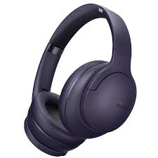
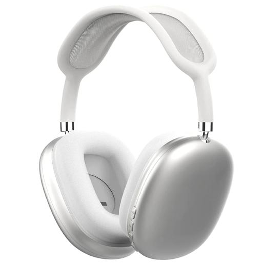
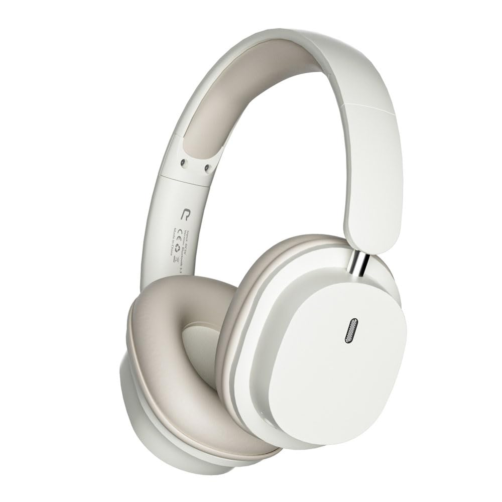
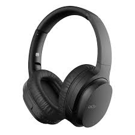
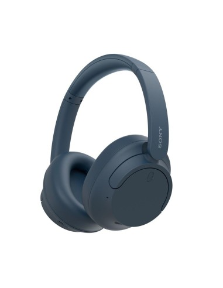
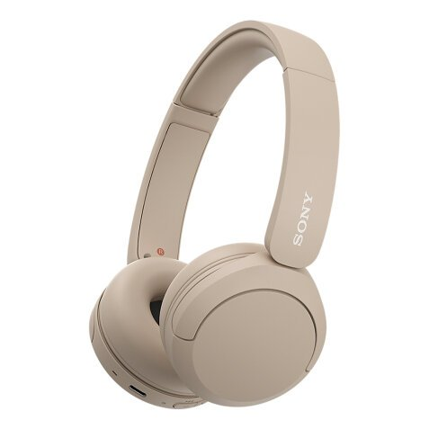
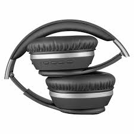
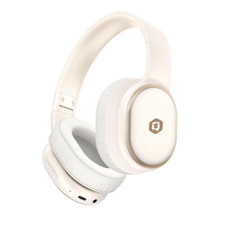
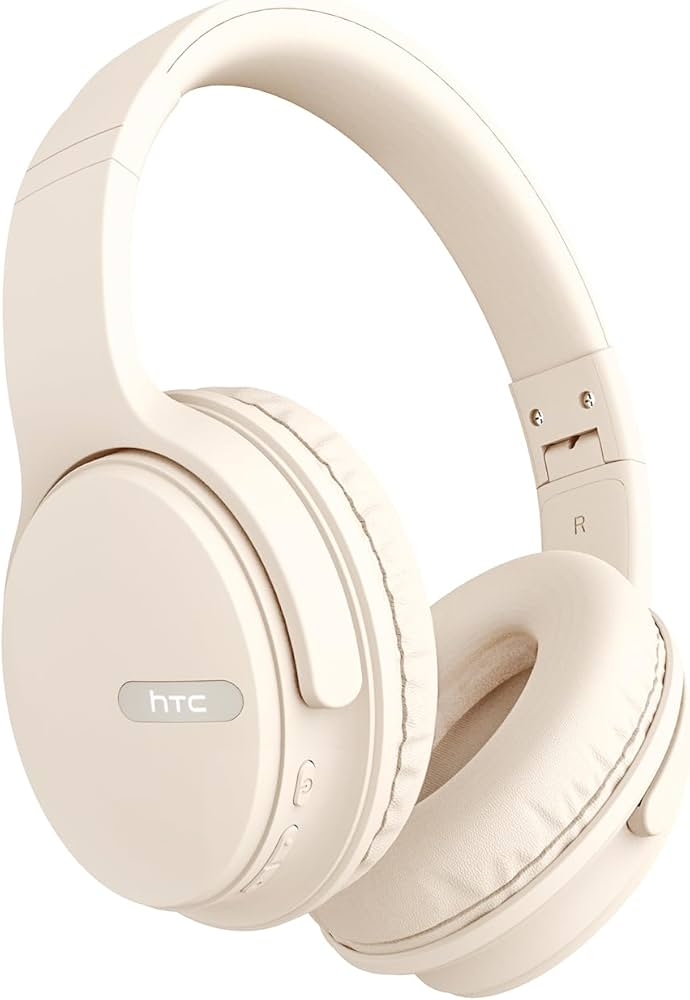

CASCOS
Con diadema
¿Para que sirven estos cascos y porque usarlos?
Los cascos de diadema son auriculares cómodos y versátiles diseñados para ofrecer alta calidad de sonido en actividades como escuchar música, gaming, videollamadas o edición de audio. Su diseño con banda ajustable y almohadillas los hace ideales para usarlos por largos periodos, mientras que modelos avanzados pueden incluir cancelación de ruido o micrófonos para comunicación clara. Son más duraderos y cómodos que otros tipos de auriculares, y se adaptan a diversas necesidades, desde el ocio hasta el trabajo profesional.









